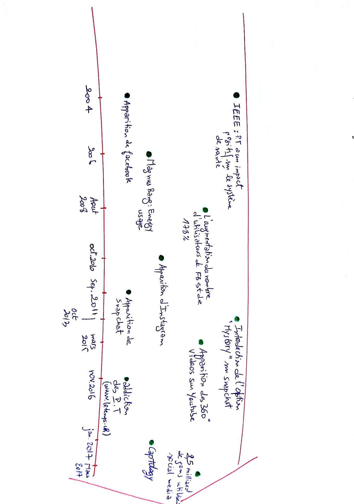

Home
(current)
Présentation du problème
Problématique
Expertise scientifique et technique
Société civile
Presse et médias
Entretiens
Données et visualisations
Frise chronologique
Acteurs
Arguments
Liens
